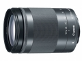

器材库 > APS画幅镜头 > EF-M 18-150/3.5-6.3 IS STM

详细规格
发布日期
2016-09-15
厂家推荐价格
68,000.00 （日元）
焦距
18mm-150mm
等效35mm画幅焦距
29mm-240mm
最大光圈
f/3.5-6.3
最小光圈
f/22-40
视角（对角）
74°20 - 10°25
视角（水平）
64°30 - 8°40
视角（垂直）
45°30 - 5°45
镜头结构
17片/13组
非球面镜片
2片
低/超低色散镜片
1片
光圈叶片
7片
最近对焦距离
25cm
最大放大倍率
0.31倍
驱动马达
STM
滤镜口径
55mm
镜头卡口
Canon EF-M
防抖
是
颜色
黑色, 灰色
尺寸
60.9×86.5mm
重量
300g
匿名网友2018-11-23 15:014.42 分
操作性 5.00耐用性 4.00性价比 4.50解像力 4.50色彩还原 4.50机械结构 4.00
产品图 / 样片
EF-M 18-150/3.5-6.3 IS STM